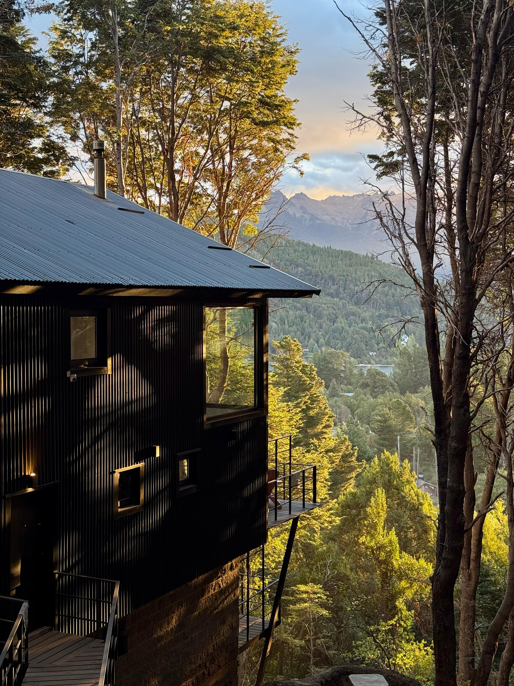
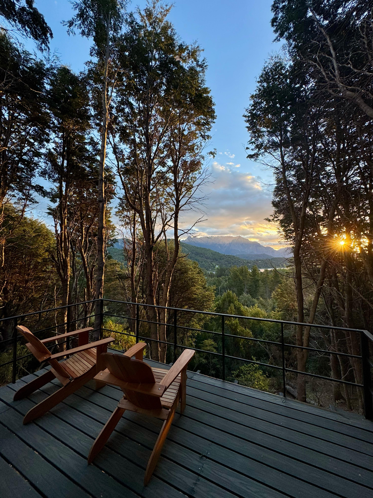
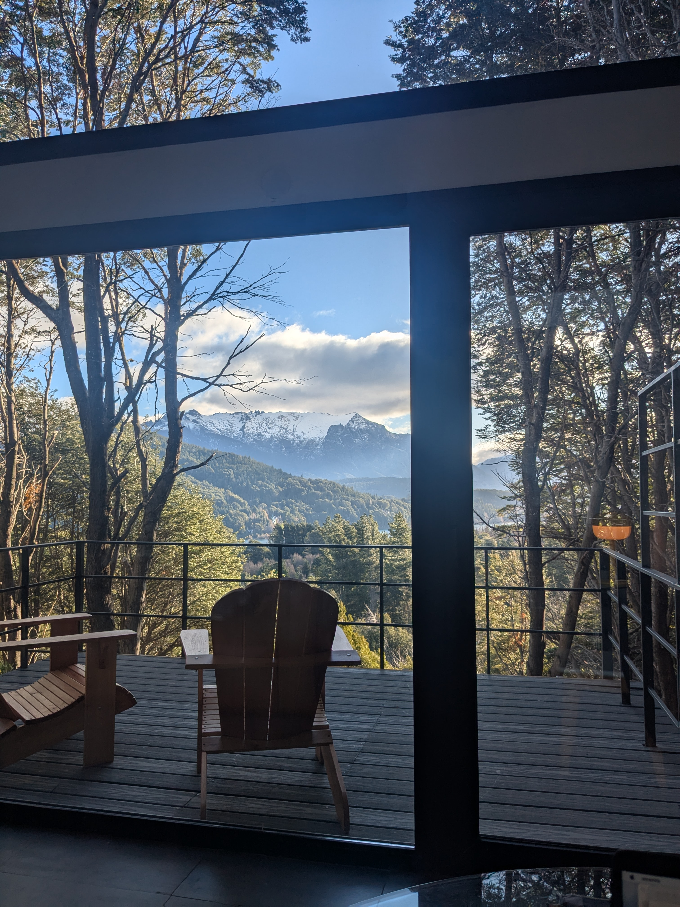
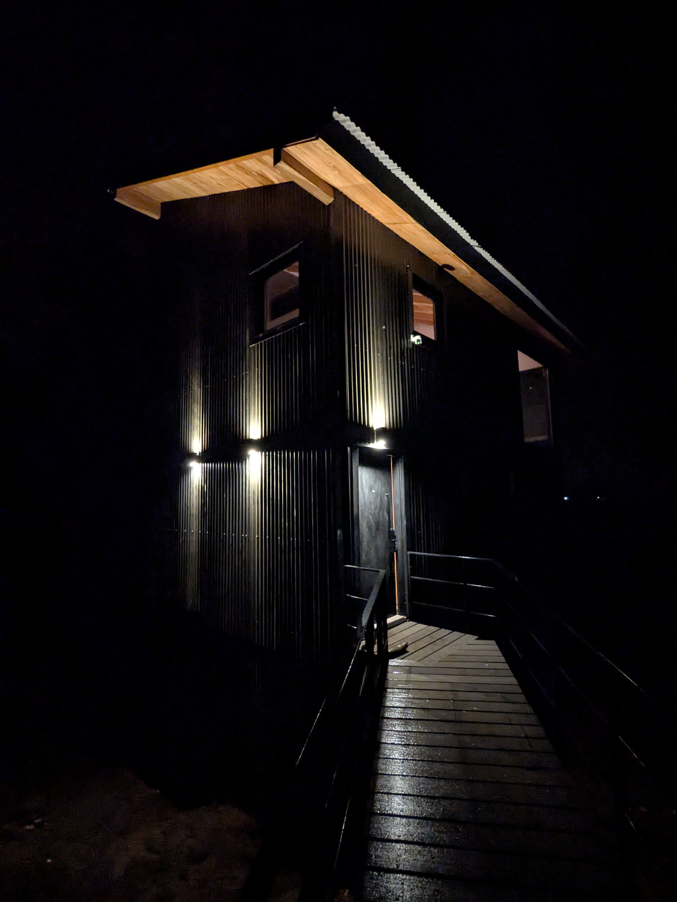
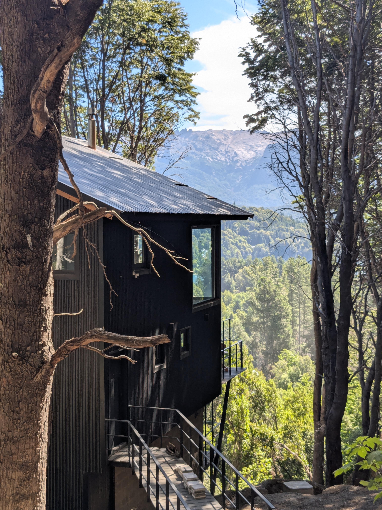
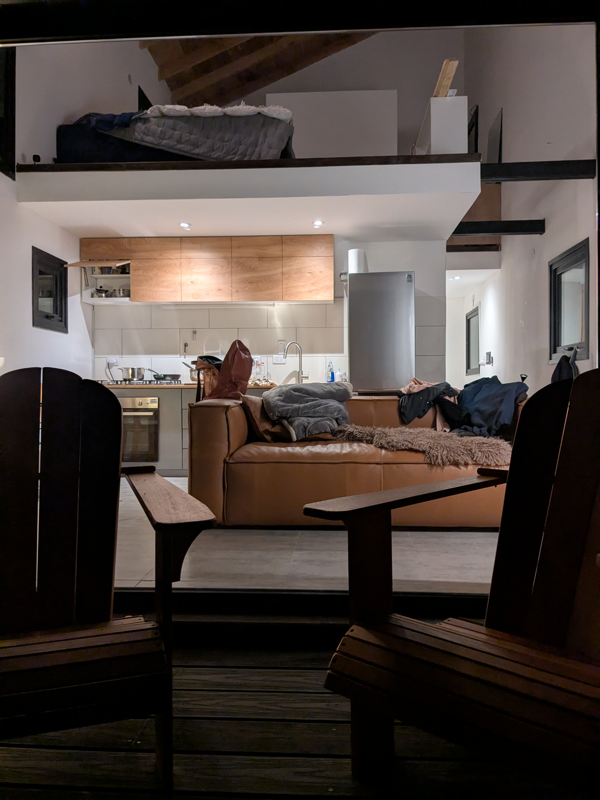
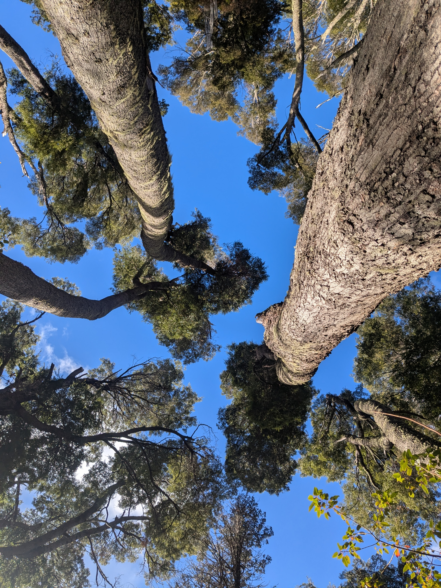

Posta Bariloche stands on the forested hillside of Península San Pedro, an exclusive peninsula inside Nahuel Huapi National Park. The house rises as a dark vertical form through native coihue — black corrugated steel against ancient trunks — with a glass front on two sides that frames unobstructed views of Cerro López and the lake below.
Eight-meter ceilings open the interior into the canopy. Heated concrete floors run the full ground floor. Two king bedrooms — one upstairs, one downstairs en suite with its own private deck — sleep in total quiet, with only the wind in the trees and the occasional Austral parakeet. The upper bedroom has a dedicated workspace and a fourth-floor balcony where the lake appears through the treetops.
Every room faces the forest and the view. The mountain is always present. Drag through the house — left to right, ground to canopy.






The dominant tree of the Andean-Patagonian forest and the one that surrounds Posta Bariloche on every side. Evergreen, long-lived, reaching 40 meters. The name comes from the Mapudungun word koihue: simply, the tree. It is the forest itself.
Evergreen · 40 mA small tree of the forest understory, in clearings and stream margins where more light reaches the ground. In autumn its serrated leaves turn warm gold. Not the first tree you notice, but the one you return to.
Understory · goldThe tree that turns Patagonia red. A deciduous southern beech, it climbs right to the treeline, and each autumn its small round leaves transform entire mountainsides into fire. It burns before it sleeps.
Deciduous · treelineOne of Patagonia's most ancient survivors — individual trees live more than 1,500 years. The cypress marks thresholds: where forest opens onto steppe or lake. It marks time in ways humans cannot fully comprehend.
1,500 yrsThe name first appeared in writing in 1520, recorded by Antonio Pigafetta, the Italian scholar who sailed with Magellan on the first circumnavigation of the Earth. Near the Strait, the expedition encountered the indigenous Tehuelche people — known for their height and the guanaco-skin boots they wrapped against the cold.
Pigafetta called them patagones — from the Spanish pata, foot, and possibly from the fictional giant Pathagon of the romance Primaléon (1512). The word carried the full weight of European mythology: giants at the edge of the world, where the map ran out and the imagination took over.
Mapuche traditions hold a different understanding. For them it is simply Wallmapu — the surrounding territory — the earth that has always been there. The giants were never giants. They had been here long enough to know the mountains were not the edge of anything. They were the center.
One of the world's largest arrayán myrtle forests, ten minutes from Posta Bariloche on the Circuito Chico near Llao Llao. Twisted cinnamon-colored trunks rise over a mossy floor that inspired Disney's Bambi. Walk it in the morning when the bark glows orange. Or take the ferry from Puerto Llao Llao — ten minutes away — to Isla Victoria for a fully immersive old-growth forest experience.
Eighteen holes set between two lakes with Cerro López and Cerro Catedral as backdrop. One of the most scenic golf courses in South America. The hotel itself — a landmark of Patagonian alpine architecture — is worth visiting for a drink on the terrace alone.
Ranked among the world's best views — a short chairlift ride to a summit that looks out over five lakes, the Llao Llao peninsula, and every major peak of the Argentine Andes. At the top: vintage alpine vibes, apple strudel, and a panorama that takes time to absorb.
A sheltered beach on the lake named for its stillness. The water is impossibly clear and cold — glacial runoff from the Andes, filtered through volcanic rock. Kayak rentals available on site. Come early for the stillness; stay for the light on the water in the afternoon.
The largest ski resort in South America with over 120 km of runs, a vertical drop of 1,000 m, and a season that runs June through October. In summer the same mountain opens for trekking and mountain biking. The views from the ridge take in the entire lake district.
Patagonia's rivers and lakes are legendary among fly fishers — crystal-clear water, wild brown and rainbow trout, and almost no one else around. Fish the Limay, the Traful, or Nahuel Huapi itself. Local guides available; licenses required and easy to arrange.
The mountain you see from every window at Posta Bariloche. The trailhead is ten minutes by car. Full-day hikes reach the refuge at 1,650 m with sweeping views of the entire lake district. One of the great day hikes of Patagonia.
Our local, right here on Península San Pedro. Solís is a small, serious kitchen using Patagonian ingredients with care and imagination. The kind of place that makes you rearrange your plans to eat there twice.
Minutes from Posta Bariloche, Ánima brings refined Patagonian cooking to the lake road. Wood fire, local produce, natural wines. One of the best tables in the region — reserve ahead.
Shoulder months — spring and autumn. The forest is quietest. Lenga turns red in May.
Summer and ski season. Cerro Catedral 30 min. Nahuel Huapi for swimming and kayak.
One flat fee per reservation, regardless of length. No additional service charges.